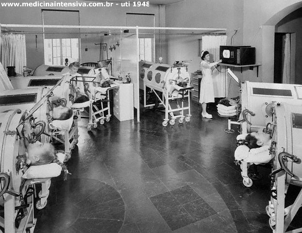

Historia da Fisioterapia

(UTI em 1955 com utilização do pulmão de aço - Boston)
Inicialmente tinha seu enfoque na assistência ventilatória com manuseio dos ventiladores não invasivos chamados de pulmão de aço ( Iron Lung ). Após este período, vem sido incorporada ao atendimento dos pacientes principalmente no aspecto respiratório, a chamada fisioterapia pneumo-funcional, e a neurológica então neuro-funcional. Em 2001, o Conselho Federal de Fisioterapia e Terapia Ocupacional ( COFFITO ) reconhece os primeiros cursos de Fisioterapia Intensiva no Brasil, dando início a conceituação moderna da atuação do fisioterapeuta intensivista, este com atuação exclusiva nas unidades de Terapia Intensiva e Semi-Intensiva.
Douglas Ferrari, Presidente da SOBRATI descreve em 2000 o Primeiro Projeto pedagógico Oficial e nome da Especialidade: Fisioterapia Intensiva
As Unidades de Terapia Intensiva transformaram-se em serviço especializado de caráter multiprofissional o qual englobou o fisioterapeuta no aspecto de diagnóstico, tratamento e prevenção. Nesta nova perspectiva há necessidade de transformar o profissional, oferecendo-lhe conhecimento teórico e prático para poder oferecer assistência com qualidade e interferir para o bom prognóstico e qualidade pós-internação. Portanto a formação específica em Fisioterapia Intensiva é fundamental e necessária para introduzir o fisioterapeuta definitivamente no tratamento do paciente crítico.
O crescimento da complexidade aliado ao desenvolvimento tecnológico na atenção ao paciente criticamente doente exige uma formação profissional aprofundada, reflexiva e crítica que permita ao fisioterapeuta desenvolver ações assistenciais que o permitam superar os desafios clínicos e funcionais dos pacientes, os quais apresentam quadros clínicos flutuantes, exigindo uma maior complexidade nos processos diagnósticos e terapêuticos de tomadas de decisões.
A assistência ventilatória do paciente crítico, a monitorização ventilo-respiratória, a prevenção dos efeitos decorrentes do repouso prolongado no leito, assim como a atenção dos distúrbios e lesões musculoesqueléticos, neurofuncionais, metabólicos e cardiovasculares imprimem uma gama de conhecimentos que transcende a Fisioterapia Pneumofuncional, apontando para a necessidade do treinamento na área de Fisioterapia Intensiva, especialidade de maior nível de complexidade e que, se devidamente administrada proporciona melhora significativa de indicadores de qualidade assistencial, tais como: morbidade, mortalidade e taxa de permanência, representando ganhos funcionais importantes e otimizando a relação custo-benefício da assistência. Nesta visão surge o Fisioterapeuta Intensivista ( FI ).
Quem é o Fisioterapeuta Intensivista ?
É profissional que se dedica ao atendimento do paciente crítico, efetuando diagnósticos e terapias cinesio-funcionais. Sua importância é reconhecida na Portaria do MS a qual prevê sua obrigatoriedade em regime exlcusivo de 12 horas nas UTIs. É sua função elaborar o prontuário fisioterapeutico com os diagnósticos e tratamentos funcionais e finalização de alta. Como agente promotor da fisioterapia, deve ser o coordenador dos procedimentos fisioterapeuticos, orientado os componentes das Unidades, sobretudo auxiliares, e sendo o realizador principal dessa atividade.
Titulação- No âmbito de complexidade, a fisioterapia participa do processo na sua integridade o que exige formação específica e competente, impondo-se critérios de Titulação.
Formação e Titulação: As tendências atuais levam a duas formas de titulação direta emitida através do Conselho de Fisioterapia, ou seja, a de especialização em CF-AFIB ou profissionais que comprovem até 2003 5 anos de atuação em UTI.
Objetivos da especialização em FI:
Capacitar o fisioterapeuta a utilizar os modernos recursos diagnósticos cinesiológicos funcionais e fisioterapêuticos na prática clínica da Fisioterapia Intensiva;
Aprofundar os conhecimentos do fisioterapeuta quanto à administração do Processo Fisioterapêutico, englobando os aspectos diagnósticos, prognósticos e intervencionistas, considerando as ações sinérgicas e cinéticas dos órgãos e sistemas humanos;
Capacitar os fisioterapeutas á resolução de intercorrências relacionadas à prática fisioterapêutica
Aperfeiçoar o nível de assistência prestada por fisioterapeutas no âmbito da Fisioterapia Intensiva;
Favorecer o desenvolvimento da formação científica no campo da Fisioterapia Intensiva, e
Formar especialistas designados fisioterapeutas intensivista para abrangência proporcional mercadológica do crescimento nacional das UTIS
É de caráter obrigatório que todos profissionais sejam submetidos a aprovação do SAFI e recomenda-se o ACLS Advanced Cardiologic Life Support para ser portador do título de especilista em FI.
O FI tem a necessidade de conhecer a clinica e as manifestações das doenças nos diversos sistemas para poder interagir melhor no atendimento fisioterapêutico.
Atuação Específica :
Parada-Cárdio-Respiratória : Os procedimentos fisioterapeuticos intensivos podem favorecer fatores que induzam a arritmias. Portanto o fisioterapeuta deve em situações emergenciais iniciar as manobras de reanimação pertinentes incluindo ABCD primário e, na ausência do médico e caracterizada a urgência-emergência, efetuar o A secundário ( intubação orotraqueal ) desde esteja habilitado ( portador do ACLS e Título ). Assistência Ventilatória : refere-se a indicação, acompanhamento e técnica de desmame com avaliação dos principais índices respiratórios como Tobim e PaO2/Fio2. Na prática é essencial a utilização dos ventilômetros, manovacuômetros, e insentivadores;
Transporte intra-hospitalar: deve ser de rotina o acompanhamento do FI no transporte de pacientes dependentes de oxigênio ou ventiladores para exames como tomografia computadorizada e ressonâncias, onde com ventiladores microprocessados de transporte com MICROTAK podem ser de extrema importância em pacientes dependentes de modos ventilatórios volumétricos e peep;
Atendimento emergencial – pronto socorro
Diretrizes curriculares básicas para formação do FI: O projeto pedagógico destinado a formação do FI inclui sua atividade de formação exclusiva no ambiente UTI, com carga horária mínima de 1600 horas, e mínimo de 13 meses, em Unidades que permitam 2 leito / 1especializando e possuam alto grau de complexidade. Curricularmente inclui nas suas disciplinas:
- Fisioterapia Pneumo-Funcional Intensiva;
- Fisioterapia Neuro-Funcional Intensiva;
- Assistência Ventilatória;
- Exames Complementares em UTI;
- Fisioterapia Cárdio-Vascular Intensiva;
- Fisioterapia Músculo-esquelética;
- Fisioterapia Nefrológica Intensiva;
Atuação do FI:
Assistência Ventilatória: Inclui a oxigenoterapia e Ventilação mecânica.
Oxigenioterapia: impregada através de catéter, máscara ou ventilação mecânica, deve indicada e acompanhadas através de avaliações gasométricas diárias.
Ventilação Mecânica: - avaliação de força e condição muscular global ( exame fisico; perimetria muscular; manovacuometro e ventilometro para musculatura. Monitorização gráfica em pacientes em VM.
Estratégia protetora
- SARA
- DPOC
- AVC
- TCE
- VMNI
- Desmame Ventilatória
- Manobras de Higiene brônquica Intensivas
- Técnica de Expiração Forçada ( TEF )
- Técnica de Vibração
- Percussão
- Drenagem Postural
- Reexpansão pulmonar
- Aspiração traqueal
Manobras Motoras Intensivas : Reabilitação da musculatura em pacientes inconscientes e conscientes sem estímulos voluntários através de eletroestimulação (FES), cinesioterapia. Atuação em Escaras de Decubito através de posicionamento, uso de laser terapêutico e manipulação miofascial (quando instalada a lesão). Indicações de Orteses para minimização de disturbios ostio-articulares.
- Mobilização ativa Mobilização passiva
- Posicionamento intermitente
- Avaliação da Monitorização Neurológica ( PIC – PPC )
- Análise dos Exames Complementares: Conhecimento necessário para interpretar os exames de rotina em UTI (gasometrias, Radiologias Torax, Tomografias, Eletrocardiograma, etc).
- Interação Medicamentosa: Interações das principais drogas usadas pela parte médica nos pacientes e suas implicações no atendimento fisioterapêutico.
- Humanização: compromisso ético com o familiar e paciente, retratando o atendimento fisioterapêutico e minimizando o sofrimento e melhorar sua condição psico-físico-social.
- Atuação na equipe multidisciplinar: auxilia e interage com outros profissionais evidenciando as indicações e contra indicações de suas condutas fisioterapêuticas estabelecendo prioridades em suas intervenções.
- Atuação na analgesia: Analgesia muscular (Termoterapia, Crioterapia, Eletroanalgesia) e indicação da sedação, analgesia ou curarização para procedimento fisioterapeutico ou assistência-ventilatória.
- Prontuário Fisioterapeutico na Uti
- Dados do paciente Admissão
- História Clínica
- Exame Físico Geral
- Exame físico Especial ( Sistemas )
- Hipótese Diagnóstica Fisioterapêutica cinesiológica
- Tratamento fisioterapeutico funcional